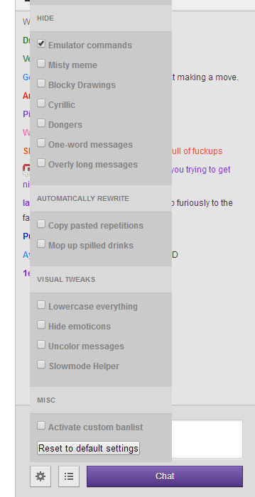

A Javascript userscript to filter chat commands and other spam from the chat on the Twitch Plays Pokemon stream
A Javascript userscript to filter chat commands and other spam from the chat on the Twitch Plays Pokemon stream

Fast and lightweight way to run the script.
Just drag the button below onto your bookmarks bar and click on it when you have the TPP-Tab open to enable the script.
Alternate Method:
Go to the bookmark menu of your browser and add a new bookmark with the title of your choice.
Copy the following snippet and paste it into the URL-Field:
javascript:(function(){document.body.appendChild(document.createElement('script')).src='http://jpgohlke.github.io/twitch-chat-filter/chat_filter.user.js';})();
Save the Bookmark.
From now on, you can just click on that bookmark when you have the TPP-Tab open to enable the script.
Installing the userscript via Greasemonkey will automatically run it everytime you visit the TPP stream.
Install the Greasemonkey extension for Firefox.
Click this link to navigate to the script URL: http://jpgohlke.github.io/twitch-chat-filter/chat_filter.user.js
Greasemonkey will detect the userscript and ask what to do with it. Tell it to "Install" the script.
Refresh the page TPP stream page.
Tampermonkey lets you install userscripts in Chrome, similarly to how Greasemonkey does it in Firefox.
Install the Tampermonkey extension for Chrome.
Click this link to navigate to the script URL: http://jpgohlke.github.io/twitch-chat-filter/chat_filter.user.js
Tampermonkey will detect the userscript and will open a new tab. Click on Install to Tampermonkey and click Ok.
Refresh the page TPP stream page.
If you don't want or can't install one of the previously mentioned browser extensions, one possibility is to run the script via the developer console. However, you will need to rerun the script every time you refresh the stream.
On the TPP stream page, open your broser's developer console.
Ctrl + Shift + K
Ctrl + Shift + J
Ctrl + Alt + I
F12
Ctrl + Shift + I
Copy the following snippet and paste it into the developer console on the TPP page: javascript:(function(){document.body.appendChild(document.createElement('script')).src='http://jpgohlke.github.io/twitch-chat-filter/chat_filter.user.js';})();
Press Enter to run the code.
All changes should be made in chat_filter.user.js from now on. Please try to ensure that your changes work in both the console and with the UserScript.
Update the compressed (minified) version whenever you make a substantive update. No need for small things like formatting or comments, obviously.